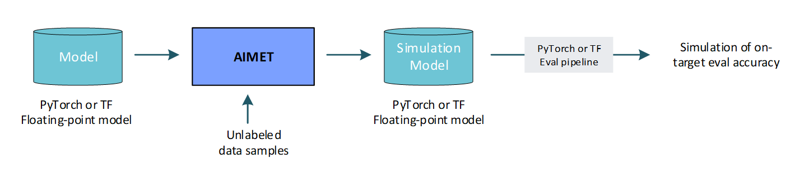
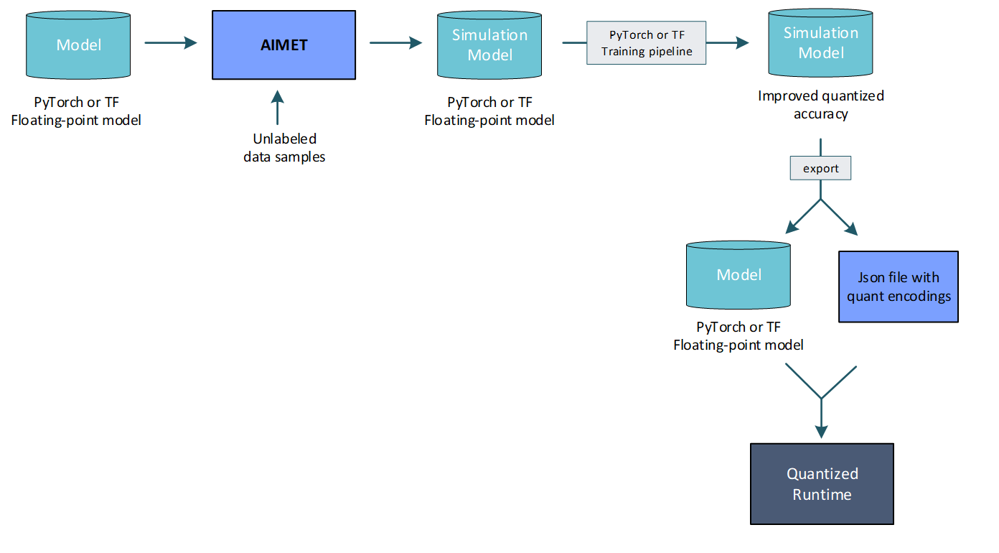
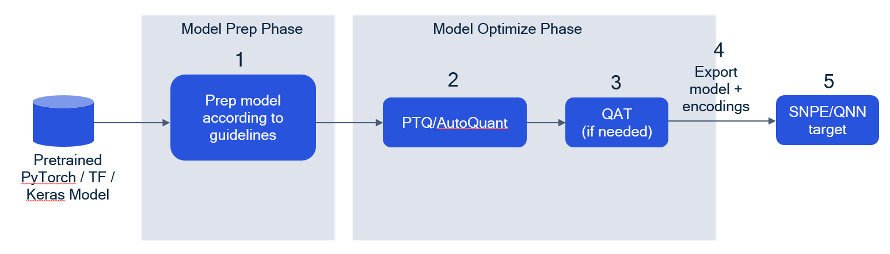
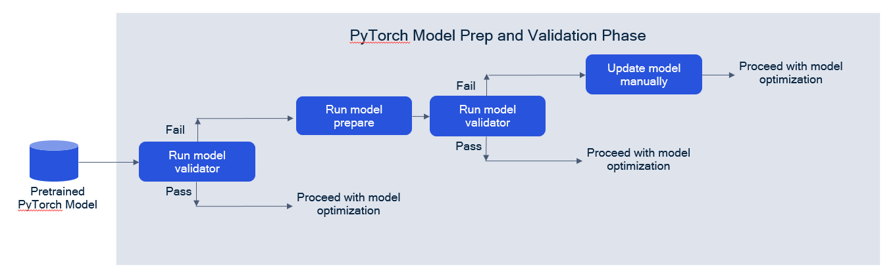

AIMET Model Quantization
Models are generally trained on floating-point hardware like CPUs and GPUs. However, when these trained models are run on quantized hardware that support fixed-precision operations, model parameters are converted from floating-point precision to fixed precision. As an example, when running on hardware that supports 8-bit integer operations, the floating point parameters in the trained model need to be converted to 8-bit integers. It is observed that for some models, running on an 8-bit fixed-precision runtime introduces a loss in accuracy due to noise added from the use of fixed precision parameters and fixed precision operations.
AIMET provides multiple techniques and tools which help to create quantized models with a minimal loss in accuracy relative to floating-point models.
This section provides information on typical use cases and AIMET’s quantization features.
Use Cases
1. Predict on-target accuracy: AIMET enables a user to simulate the effects of quantization to get a first order estimate of the model’s accuracy when run on quantized targets. This is useful to get an estimate of on-target accuracy without needing an actual target platform. Note that to create a simulation model, AIMET uses representative data samples to compute per-layer quantization encodings.

2. Post-Training Quantization (PTQ): PTQ techniques attempt to make a model more quantization friendly without requiring model re-training/fine-tuning. PTQ (as opposed to fine-tuning) is recommended as a first step in a quantization workflow due to the following advantages:
No need for the original training pipeline; an evaluation pipeline is sufficient
Only requires a small unlabeled dataset for calibration (can even be data-free in some scenarios)
Fast, simple, and easy to use

Note that with PTQ techniques, the quantized model accuracy may still have a gap relative to the floating-point model. In such a scenario, or to even further improve the model accuracy, fine-tuning is recommended.
3. Quantization-Aware Training (QAT)/Fine-Tuning: QAT enables a user to fine-tune a model with quantization operations inserted in network graph, which in effect adapts the model parameters to be robust to quantization noise. While QAT requires access to a training pipeline and dataset, and takes longer to run due to needing a few epochs of fine-tuning, it can provide better accuracy especially at low bitwidths. A typical QAT workflow is illustrated below.

AIMET Quantization Features
- Quantization Simulation:
QuantSim enables a user to modify a model by adding quantization simulation ops. When an evaluation is run on a model with these quantization simulation ops, the user can observe a first-order simulation of expected accuracy on quantized hardware.
- Quantization-Aware Training (QAT):
QAT allows users to take a QuantSim model and further fine-tune the model parameters by taking quantization into account.
Two modes of QAT are supported:
- Regular QAT:
Fine-tuning of model parameters. Trainable parameters such as module weights, biases, etc. can be updated. The scale and offset quantization parameters for activation quantizers remain constant. Scale and offset parameters for weight quantizers will update to reflect new weight values after each training step.
- QAT with Range Learning:
In addition to trainable module weights and scale/offset parameters for weight quantizers, scale/offset parameters for activation quantizers are also updated during each training step.
Post-Training Quantization
Post-Training Quantization (PTQ) Techniques:
Post-training quantization techniques help a model improve quantized accuracy without needing to re-train.
- AutoQuant:
AIMET provides an API that integrates the post-training quantization techniques described below. AutoQuant is recommended for PTQ. If desired, individual techniques can be invoked using standalone feature specific APIs.
- Adaptive Rounding (AdaRound):
Determines optimal rounding for weight tensors to improve quantized performance.
- Cross-Layer Equalization:
Equalizes weight ranges in consecutive layers.
- BN Re-estimation:
Re-estimates Batch Norm layer statistics before folding the Batch Norm layers.
- Bias Correction [Deprecated]:
Bias Correction is considered deprecated. It is advised to use AdaRound instead.
Debugging/Analysis Tools
- Debugging/Analysis Tools
- QuantAnalyzer:
Automated debugging of the model to understand sensitivity to weight and/or activation quantization, individual layer sensitivity, etc.
- Visualizations:
Visualizations and histograms of weight and activation ranges.
AIMET Quantization Workflow
This section describes the recommended workflow for quantizing a neural network.

1. Model prep and validation
Before attempting quantization, ensure that models have been defined in accordance to model guidelines. These guidelines depend on the ML framework the model is written in.
PyTorch
Pytorch:
PyTorch Model Guidelines
In the case of PyTorch, there exists the Model Validator utility, to automate the checking of certain PyTorch model requirements, as well as the Model Preparer utility, to automate the updating of the model definition to align with certain requirements.
In this model prep and validation phase, we advise the following flow:
Users can use the model validator utility first to check if the model can be run with AIMET. If validator checks fail, users can first try using model preparer in their pipeline, an automated feature for updating models, and retry the model validator to see if checks now pass. If the validator continues to print warnings, users will need to update the model definition by hand prior to using AIMET features.
For more information on model validator and preparer, refer to the corresponding sections in AIMET PyTorch Quantization APIs.
Tensorflow
- Tensorflow:
TensorFlow Model Guidelines
2. PTQ/AutoQuant
The user can apply various PTQ techniques to the model to adjust model parameters and make the model more robust to quantization. We recommend trying AutoQuant first, a PTQ feature which internally tries various other PTQ methods and finds the best combination of methods to apply. Refer to the AIMET Quantization Features section for more details on PTQ/AutoQuant.
3. QAT
If model accuracy is still not satisfactory after PTQ/AutoQuant, the user can use QAT to fine-tune the model. Refer to the AIMET Quantization Features section for more details on QAT.
4. Exporting models
In order to bring the model onto the target, users will need two things:
a model with updated weights
an encodings file containing quantization parameters associated with each quantization op
AIMET QuantSim provides export functionality to generate both items. The exported model type will differ based on the ML framework used:
.onnx for PyTorch
meta/checkpoint for TensorFlow
.h5 and .pb for Keras
Depending on which AIMET Quantization features were used, the user may need to take different steps to export the model and encodings file. For example, calling AutoQuant will automatically export the model and encodings file as part of its processing. If QAT is used, users will need to call .export() on the QuantSim object. If lower level PTQ techniques like CLE are used, users will need to first create a QuantSim object from the modified model, and then call .export() on the QuantSim object.
Debugging Guidelines
Applying AIMET Quantization features may involve some trial and error in order to find the best optimizations to apply on a particular model. We have included some debugging steps in the Quantization Guidebook that can be tried when quantization accuracy does not seem to improve right off the bat.